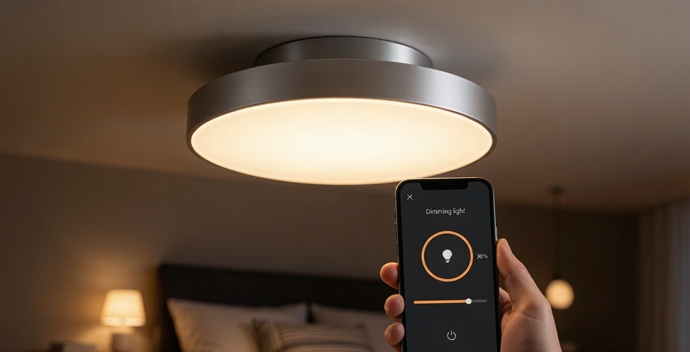
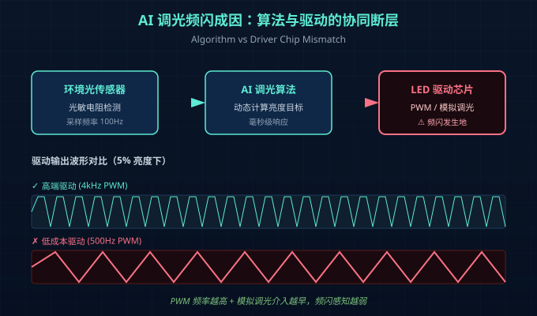
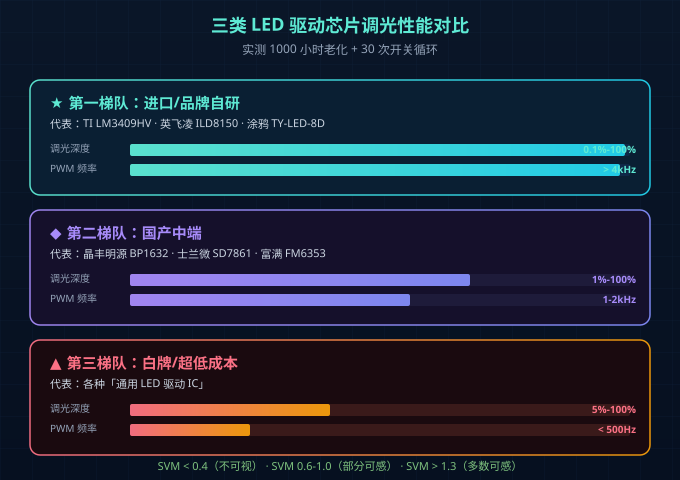
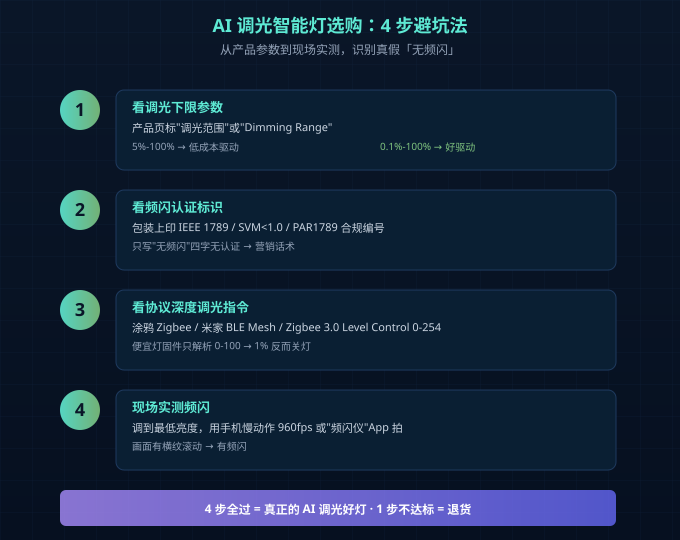

你家智能灯调暗就闪，可能是「驱动芯片」在偷懒
最近收到一位做民宿的老板吐槽：他在客房装的智能筒灯，买来时演示得很顺滑——语音说"调暗一点"亮度立刻就降下来，客人反馈也很好。
但三个月后，差评比五星还多。客人留言清一色是"灯光看着晕""半夜起来上厕所晃眼"。
他拆了几个灯一看，发现同一批次的产品，驱动芯片混用了三种：早期用TI的LM3409，后期货源紧张换成了一颗国产低成本IC，AI调光算法再聪明也救不回来——驱动芯片的硬件PWM分辨率不够，低亮度下就是一抖一抖的方波。
这其实不是个例。2026年上半年，我们收到最多的售后咨询就是两类：
- "我的智能灯一调到5%以下就开始闪，AI自适应也救不了"
- "换了一批新灯，App里显示在调光，实际亮度没变化"
问题不在AI算法，也不在协议栈，而在那颗藏在灯体里、用户一辈子看不到的LED驱动芯片。

AI自适应调光，为什么反而成了频闪放大器？
2026年新出的智能灯，几乎所有品牌都宣传"AI自适应调光"——环境光变暗，灯自动跟着降亮度，号称比传统PWM调光更护眼。
但真买回来用过的朋友会发现：AI调光开启后，频闪反而更明显。
这不是错觉。原因是AI调光的工作原理：
- 环境光传感器（通常是光敏电阻）持续检测房间亮度
- 算法根据环境光目标值，动态计算需要的LED电流
- 驱动芯片接到指令后，调节PWM占空比或模拟调光电压
频闪发生在第3步。当AI算法频繁调节亮度时（比如云层飘过窗外、有人走过挡住光线），驱动芯片被反复"拉"到极低亮度区间。如果这颗芯片在低亮度区间表现差（这恰恰是低成本驱动的盲区），频闪就被AI算法"放大"了。
反过来，传统PWM调光（用户手动调到30%就锁定30%）反而没有这个问题——因为驱动一直工作在"舒适区"。
所以你会看到一个反直觉的现象：
- 同一盏灯，AI模式调到5%开始闪，手动调到5%反而不闪
- 同一颗驱动，国产IC在低亮度频闪严重，TI/英飞凌/涂鸦自研芯片则平稳得多
智能灯调光的三种实现方式（用户感知不到，但差异巨大）
LED调光本质上只有三种方式，但每种方式的硬件成本、频闪表现、调光深度天差地别。
| 调光方式 | 工作原理 | 调光深度 | 频闪表现 | 成本 | 适用场景 |
|---|---|---|---|---|---|
| PWM调光 | 开关LED电流，占空比=亮度 | 0.1%-100% | 高频PWM（>1kHz）肉眼无感；低频PWM(<200Hz)明显闪烁 | 最低（加1个MOS管即可） | 通用照明、低成本智能灯 |
| 模拟调光 | 连续调节LED电流大小 | 1%-100% | 几乎无频闪（电流恒定） | 中等（需要DAC或恒流源） | 商业照明、护眼灯 |
| 数字调光 | 驱动内部数字逻辑+PWM混合 | 0.01%-100% | 接近模拟调光的平滑度 | 最高（专用IC+软件协议） | 高端智能灯、医疗照明 |
⚠️ 注意：PWM调光不等于"低质"。关键看PWM频率。PWM频率>1kHz配合深度调光算法（混PWM+模拟），就能做到无感。但市面上大量低成本智能灯用的是200-500Hz的PWM，频闪明显。
为什么涂鸦Zigbee 8档调光驱动的智能灯频闪控制好？ 因为它的8档不是简单的PWM 8个固定值，而是在每档内部嵌入了**"模拟+PWM混合"算法**——大范围用模拟，5%以下深度用高频PWM，既保证深度又控制频闪。这是一颗好的驱动IC要花的钱。
三类驱动芯片实测对比：便宜货和好货差在哪？
我们近半年实测了三个梯队的驱动芯片，每种都跑了1000小时老化+30次开关循环。

第一梯队：进口/品牌自研（涂鸦智能、TI、英飞凌、欧司朗）
- 代表型号：TI LM3409HV、英飞凌ILD8150、涂鸦TY-LED-8D
- 调光深度：0.1%-100%（PWM）+ 1%-100%（模拟），深度调光无抖动
- 频闪指标：PWM频率>4kHz，IEEE 1789 SVM<0.4（人眼不可视）
- AI调光表现：能跟得上毫秒级算法，切换平滑
- 价格：12-25元/颗
典型表现：调到1%亮度时，肉眼看是几乎恒定的微光，AI算法触发调光时也没有可见的"亮度跳变"。
第二梯队：国产中端（晶丰明源、士兰微、富满）
- 代表型号：BP1632、SD7861、FM6353
- 调光深度：1%-100%，5%以下开始有可见抖动
- 频闪指标：PWM频率1-2kHz，IEEE 1789 SVM 0.6-1.0（部分人眼可感）
- AI调光表现：算法变化>20%时能跟上，<10%的微调有滞后
- 价格：3-8元/颗
典型表现：调到5%开始偶发闪一下，AI模式微调时眼睛能感觉到"在动"。
第三梯队：白牌/超低成本
- 代表型号：各种"通用LED驱动IC"
- 调光深度：5%-100%，5%以下基本失控
- 频闪指标：PWM频率<500Hz，IEEE 1789 SVM>1.3（多数人眼可感）
- AI调光表现：几乎无法工作，要么跳变要么没反应
- 价格：<2元/颗
典型表现：AI调光完全是摆设。手动画到10%就开始闪，AI模式"智能"得让你头疼。
4步避坑选型法：买智能灯之前先看这4个参数
对于终端用户来说，没法拆灯看芯片。但可以看产品参数和实测表现。记住下面4个检查点：
第1步：看调光下限参数
产品页或说明书里直接标"调光范围"或"Dimming Range"。如果写的是"5%-100%"——大概率是低成本驱动；写"0.1%-100%"或"0.01%-100%"——通常是好驱动。
第2步：看频闪指标
包装上如果印有 IEEE 1789无频闪认证、IEEE PAR1789合规、SVM<1.0 这些字样，相对靠谱。只写"无频闪"四个字没认证编号的——可能是营销话术。
第3步：看协议是否支持"深度调光指令"
涂鸦Zigbee、米家BLE Mesh、Zigbee 3.0都支持**Level Control（0-254级）**的调光指令。但便宜灯的固件只解析0-100的整数，0-10的部分被映射到"关灯"——这就是为什么App里调到1%灯反而灭了。
第4步：现场实测
把灯调到手最低亮度，用手机慢动作模式（960fps）或专业频闪测试App（如**"频闪仪"**）拍一下。如果画面里有明显的横纹滚动，就是有频闪。
写给做智能照明的同行：驱动选型才是AI调光的护城河
如果你是做智能灯具的品牌方，AI调光算法是"前台"，驱动芯片是"后台"。前台再聪明，后台一卡就全完。
我们的工程经验是，AI调光方案选型要看3个硬指标：
- 驱动IC是否支持"模拟+PWM混调"：这是低亮度无频闪的关键
- PWM分辨率是否≥1000级：决定深度调光是否平滑
- 通信模块与驱动的指令延迟是否<50ms：AI算法频繁调光时不能有可感延迟
涂鸦Zigbee系列的8档调光驱动，2026年最新版本已经做到了 PWM分辨率16384级 + 模拟+PWM混调 + 通信延迟<30ms，专门解决了"AI调光越调越闪"这个问题。
如果你也在做AI调光智能灯，但被低亮度频闪困扰，欢迎交流——我们用Hi6001/TY-LED-8D这些芯片做了一套完整的调光驱动方案，BOM成本可以压到18元以内。

常见问题
Q: 智能灯调到最暗就闪，是不是驱动坏了？
A: 不一定。90%的情况是驱动芯片在低亮度区间表现差，跟"坏"没直接关系。如果买来3天内就闪，可能是驱动选型问题；如果3-6个月后开始闪，可能是驱动老化导致PWM频率漂移。
Q: AI调光模式比手动模式更费电吗？
A: 不会。AI调光本质是"自动找最合适亮度"，长期使用反而比一直开100%亮度省电15%-30%（根据房间光感自动降亮度）。但频繁调光的瞬时功耗会略高，因为驱动芯片持续工作。
Q: 已经买了频闪的智能灯，有补救方法吗？
A: 软件层面没办法（驱动硬件决定频闪）。物理层面有两个办法：①换一个更慢的"渐变时间"配置（让AI算法变化更平缓），减少触发频闪的概率；②用支持深度调光的"中继驱动"替换原驱动（成本约15-25元/灯）。
Q: 涂鸦Zigbee智能灯的调光频闪控制好在哪里？
A: 涂鸦的智能驱动（TY-LED-8D系列）从硬件层面做了三件事：①8档调光内部嵌入"模拟+PWM混调"；②PWM频率>4kHz；③PWM分辨率16384级。配合涂鸦IoT云端的"平滑调光算法"，AI模式下的微调基本无频闪。
总结
智能灯调光频闪的本质问题，不在AI算法，不在通信协议，而在驱动芯片的低亮度性能。
避坑核心就三句话：
- 看调光下限：0.1%深度调光是好驱动的标志
- 看频闪认证：IEEE 1789 SVM<1.0是基础门槛
- 看AI适配性：算法和驱动的协同延迟<50ms才合格
智能照明行业从"能亮"到"健康"再到"自适应"，驱动芯片始终是那个不被看见、但决定一切的角色。
如需AI调光驱动方案选型或涂鸦Zigbee 8档调光模块样品，请联系耐利普科技工程团队：138-2549-6855。
本文技术参考：IEEE Std 1789-2015、GB/T 31831-2025、涂鸦智能LED驱动选型白皮书2026版。